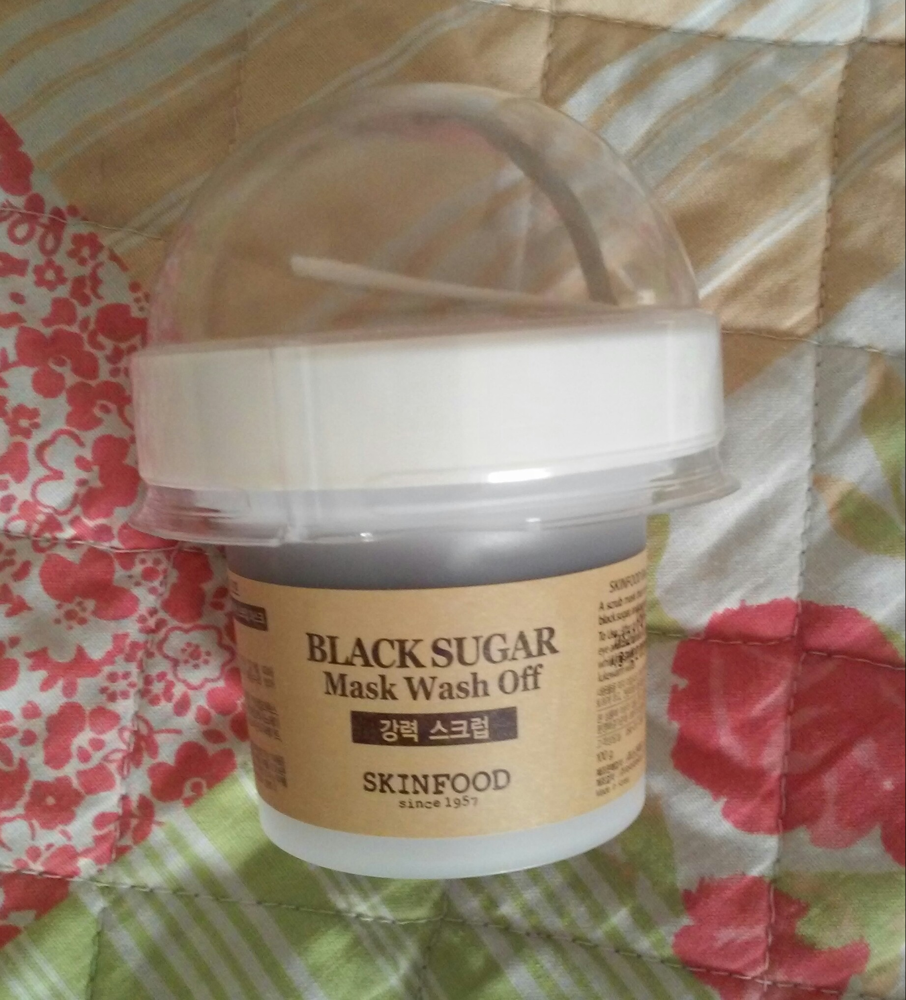
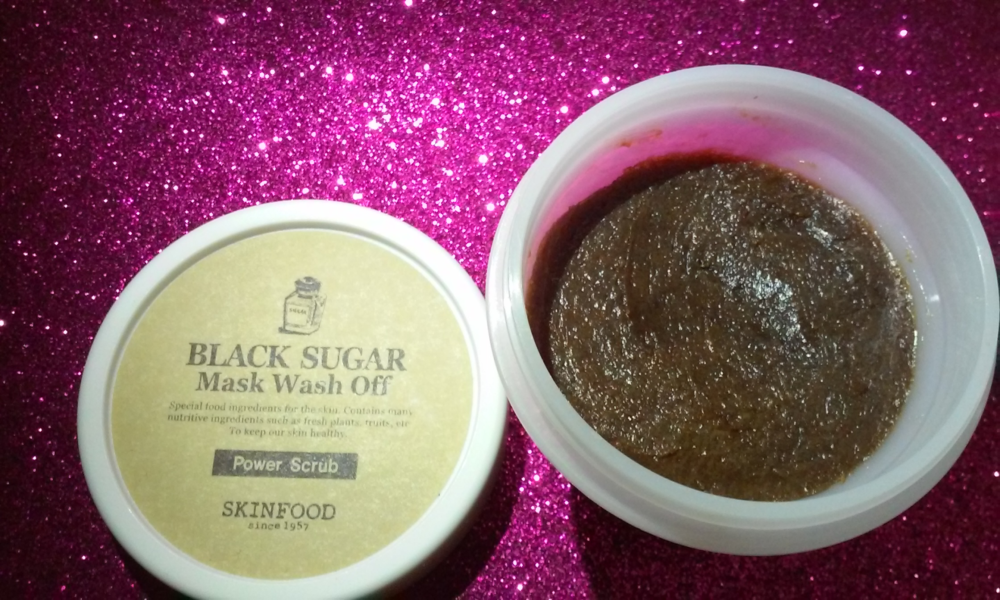

(Skin Food) Black Sugar Mask
Este es un producto que he visto que distintas beauty bloggers han usado y recomendado, así que pensé porque no lo pruebo? así que lo pedí en ebay (también se puede pedir en beautynetkorea) con el vendedor bizinside. El producto me costo alrededor de 7.09$ y con envió gratis, tardo aprox. 1 mes en llegar, la mascarilla llego bien empaquetada en una pequeña caja.
compre como una especie de edición limitada que viene con una paleta pequeña para sacar el producto y con una especie de esfera como puede ver en la foto. La aplicación de la mascarilla es muy sencilla solamente te la tienes que aplicar con el rostro bien limpio y un poco húmedo, luego de aplicarlo con las manos hacer masajes en el rostro el tiempo que lo hagas depende de ti, luego lo dejas en el rostro por 15 minutos, ya pasado el tiempo lo retiras con abundante agua y listo!
Yo antes de probarlo pensaba que iba a quitar todas o la mayoría de las impurezas de la piel (creo que eso era una de las cosas que prometían) pero cuando la probé no sentí la piel 100% limpia como pensé que seria pero lo que si note fue que dejo la piel suave e hidratada lo cual me gusto mucho y no irritó la piel, por lo cual es buena para pieles sencibles. A esta mascarilla de Skin Food Black Sugar le doy un 8 de 10 ya que como dije anteriormente sentí que no limpio a profundidad como lo haría una peel-off pero en cambio la deja muy suave e hidratada, así que también quiero probar la de arroz y porque no? también la de fresa. Bueno eso es todo para el día de hoy gracias por ver el blog y dejen sus dudas, o si ya lo han probado que les pareció en los comentarios, Adios!!